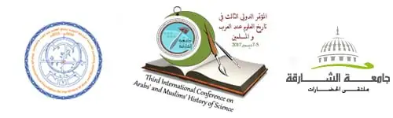

محاضرات وفعاليات ·
الاتحاد العربي لعلوم الفضاء والفلك يشارك في المؤتمر الدولي الثالث لتاريخ العلوم عند العرب والمسلمين

يشارك الاتحاد العربي لعلوم الفضاء والفلك في المؤتمر الدولي الثالث لتاريخ العلوم عند العرب والمسلمين والذي يُعقد تحت شعار “التراث العلمي العربي الإسلامي إبداع، تثاقف وتعايش” في الفترة 5-7 كانون الأول 2017 في الشارقة، دولة الإمارات العربية المتحدة، برعاية صاحب السمو الشيخ الدكتور سلطان بن محمد القاسمي عضو المجلس الأعلى حاكم الشارقة رئيس جامعة الشارقة.
وسيشارك الأمين العام للاتحاد العربي لعلوم الفضاء والفلك الدكتور المهندس عوني محمد الخصاونة في ورقة بحثية تحت عنوان التراث الفلكي في الأُردن، كما سيشارك عدد من أعضاء المجلس الأعلى للاتحاد منهم:
1. أ.د شوقي الدلال – البحرين.
2. أ.د صالح الشيذاني – عُمان.
3. روجيه حجار – لبنان.
4. د. مشهور الوردات – الأُردن.
5. د. محمد العصيري – سوريا.
6. د. صالح الصعب – السعودية.
7. م خليل قنصل – الأُردن.
وسيتم خلال هذا المؤتمر مناقشة عدد من المحاور وهي:
المحور الأول: البيئة الإبداعية وأثرها في بناء مجتمع المعرفة في الحضارة الإسلامية.
- مواصفات البيئة المبدعة في عصور الازدهار الحضاري الإسلامي.
- مواصفات المبدع والمجدد عند العلماء المسلمين (بين الأمس واليوم).
- الأفكار المبتكرة: إيضاح كيفية الإفادة من فكرة مبتكرة عند عالم من علماء المسلمين القدماء سواء على مستوى غرفة الصف (تحسينا لتعلم الطالب مفهوما معينا أو مهارة معينة) أو على مستوى الصناعة أو على مستوى العلاج …….
- تقارير عن أبحاث ومشاريع خادمة لتاريخ العلوم عند العرب والمسلمين: يقدم الباحثون أو مديرو المشاريع تقارير عن الأبحاث ومشاريع تتعلق بتاريخ العلوم. ومن الممكن أن تكون هذه المشاريع في مراحل متعددة من التنفيذ. وعليه، فقد تركز التقارير على مفهوم المشروع وتصميمه أو تقدمه المرحلي أو نتائجه النهائية. وستنشر الأوراق / التقارير المقدمة في كتاب وقائع المؤتمر.
المحور الثاني: البحث العلمي في الحضارة الإسلامية:-
- تاريخ الكراسي العلمية في الحضارة الإسلامية ودورها في نشر العلوم.
- جهود علماء المسلمين في تبسيط العلوم.
- دور الوقف في تشجيع البحث العلمي.
- جهود علماء العرب والمسلمين من ذوي الاحتياجات الخاصة في تقدم العلوم في الحضارة الإسلامية.
- مناهج المستشرقين في دراسة تاريخ العلوم عند العرب والمسلمين.
- جهود المرأة العربية والمسلمة في البحث العلمي.
المحور الثالث: إحياء التراث العلمي العربي الإسلامي وربطه بالمعاصرة:
- دور المؤسسات الأكاديمية ومراكز البحوث الدولية والإقليمية والمحلية في إحياء التراث العلمي العربي الإسلامي.
- تكنولوجيا المعلومات ووسائل التواصل الحديثة في خدمة التراث العربي الإسلامي.
- التطبيقات المعاصرة للتراث العلمي العربي الإسلامي:
- العمارة والفنون الزخرفية.
- الصناعة السياحية
المحور الرابع: تاريخ الطب والعلوم الصحية في الحضارة الإسلامية:-
- التعليم الطبي نشأته وتطوره، ومناهجه، وطرق تدريسه عند المسلمين.
- دور الوقف في تقدم الدراسات الطبية عند المسلمين.
- جهود العلماء العرب والأجانب في الكشف عن التراث الطبي الإسلامي.
- الأطباء المجددون.
المحور الخامس: العلوم البيئية في الفكر الحضاري الإسلامي:
- ·نشأة وتطور علم البيئة عند المسلمين.
- ·رواد دراسة البيئة في الحضارة الإسلامية.
- ·البيئة النظيفة في فكر علماء العرب والمسلمين (مكافحة التلوث بكل أشكاله).
المحور السادس: العمارة والفنون الزخرفية والصناعية:
- رواد العمارة وفنونها وهندستها في الحضارة الإسلامية.
- العمارة والزخرفة الإسلامية بين التأثير والتأثر.
- تجليات العبقرية الجمالية والهندسية عند العلماء المسلمين
- العمارة الدينية
- العمارة المدنية
- تخطيط المدن
- الفنون الزخرفية
- الصناعات اليدوية
- الخط والرسم
- الفنون الصناعية اليدوية (المعدنية، الخزفية، والخشبية والنسيجية وغيرها).
المحور السابع: الزراعة والري في الحضارة الإسلامية:-
- التقنية ودورها في تقدم الزراعة عند العرب والمسلمين.
- دراسة الآفات الزراعية وكيفية علاجها.
- جهود علماء المسلمين في تطوير أساليب الري وتوفير المياه.
- جهود علماء المسلمين في دراسة النباتات.
المحور الثامن: العلوم الأساسية والفلك والفضاء في الحضارة الإسلامية:
- علم الفلك بين النظرية والتطبيق في الحضارة الإسلامية.
- مخطوطات علم الفلك النادرة.
- الرياضيات وتطبيقاتها في مختلف المجالات في الحضارة الإسلامية.
- الكيمياء وتطبيقاتها الصناعية في الحضارة الإسلامية.
- علم الحيل وتطبيقاته الصناعية في الحضارة الإسلامية.
المحور التاسع: تاريخ علم التعمية.
- نشأة علم التعمية عند العرب والمسلمين.
- رواد علم التعمية في الحضارة الإسلامية.
- مخطوطات علم التعمية (دراسة ببليوغرافية).
- تاريخ تصغير الكتابة في التراث العربي الإسلامي.
المحور العاشر: التراث العلمي العربي الإسلامي وأثره في تعزيز ثقافة الحوار والتعايش.
- الترجمة ودورها في تعزيز المثاقفة بين الحضارات.
- الرحلات العلمية ودورها في تعزيز ثقافة التعايش والتسامح.
- دور الفنون الإسلامية في تعزيز ثقافة التعارف بين الشعوب.
وللحصول على المعلومات يرجى الرجوع للرابط التالي:
http://www.sharjah.ac.ae/ar/Media/Conferences/ICHS17/Pages/vi.aspx
يذكر أن جلسات وفعاليات المؤتمر الثالث ستستهدف إبراز دور العلماء العرب والمسلمين في نشر ثقافة الحوار والتعايش وروح التسامح بين الشعوب والتي كانت ميزة انفرد بها العلماء المسلمون حتى أنها كانت أهم أسباب انتشار الدين الإسلامي الحنيف في بقاع العالم وخاصة الشرق الأقصى.